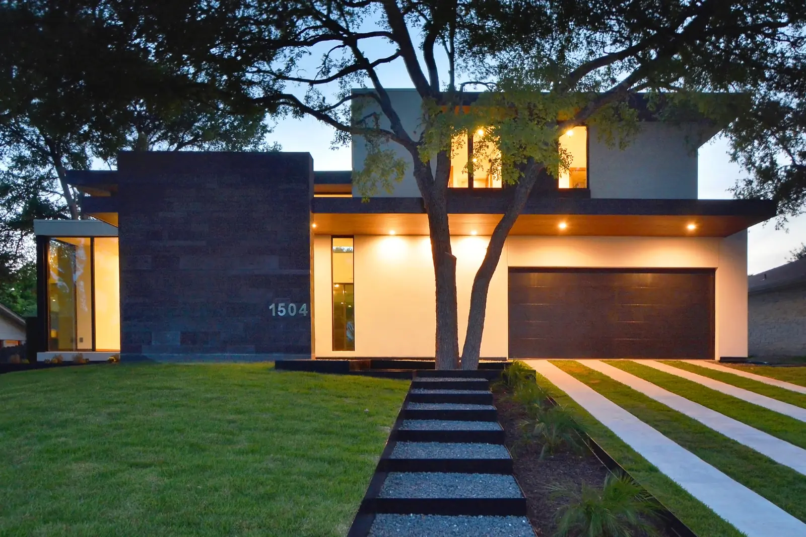
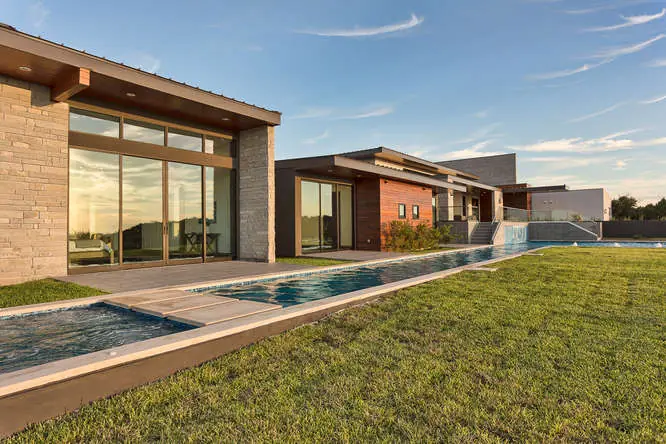
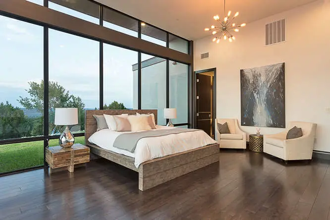
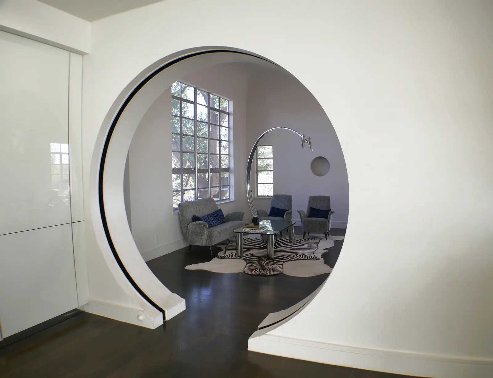
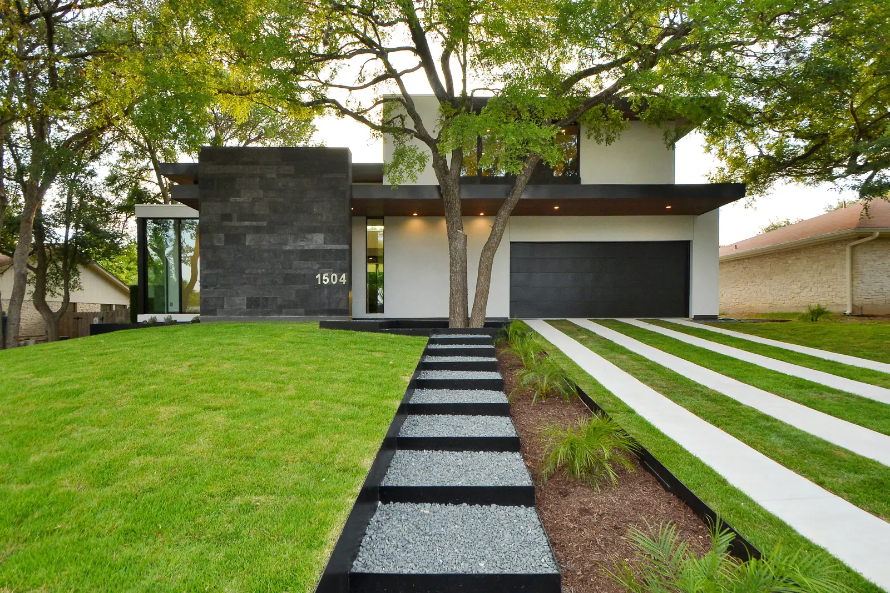

Austin, Texas · Luxury custom homes
Luxury homes with their own personality and soul.
Contempo Austin tailors every step: finding the lot in one of Austin’s finest neighborhoods, designing something unique, and building it with finishes imported for each home.
- 01Bird’s Eye View, Westlake
- 02Bohn House, 1937
- 03Lake House, Lake Travis
- 04Now building: Darter Lane
Feature · Bird’s Eye View
Sunrise and sunset with the turn of a chair.
A house at the top of the hill with 360 degrees of views, right in the heart of Westlake. One of the only places in Austin where you can watch both ends of the day from the same seat.
The project


Renovation · Bohn House
Designed in 1937 after Lost Horizon. Renovated by Contempo in 2013.
A home based on the science fiction film, completely renovated so it reads as modern Austin without losing its original soul and history.
Range
Over 15 years building more than houses.
- Single family homes
- Multifamily apartment complexes
- Commercial buildings
- Industrial parks
- Now: high end technical construction and luxury homes
Finished homes
- Redbud
- Barn Swallow
- Bird’s Eye View
- Bohn House
- Lake House
- Chelsea
- EastSide Gem
- Nest in the City
- Thousand Oaks
- Cueva de Oro
- Barn Swallow #2
